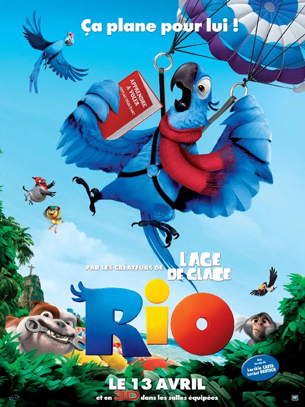

Ratatouille:
Ano de produção: 2011
Dirigido por: Carlos Saldanha.
Duração: 1h 30min
Classificação: Livre.
Gênero: Aventura, Animação, Família.
País de Origem: Estados Unidos da América.
Sinopse:
Blu (Jesse Eisenberg) é uma arara azul que nasceu no Rio de Janeiro mas, capturada na floresta, foi parar na fria Minnesota, nos Estados Unidos. Lá é criada por Linda (Leslie Mann), com quem tem um forte laço afetivo. Um dia, Túlio (Rodrigo Santoro) entra na vida de ambos. Ornitólogo, ele diz que Blu é o último macho da espécie e deseja que ele acasale com a única fêmea viva, que está no Rio de Janeiro. Linda e Blu partem para a cidade maravilhosa, onde conhecem Jade (Anne Hathaway). Só que ela é um espírito livre e detesta ficar engaiolada, batendo de frente com Blu logo que o conhece. Quando o casal é capturado por uma quadrilha de venda de aves raras, eles ficam presos por uma corrente na pata. É quando precisam unir forças para escapar do cativeiro.